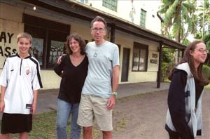

|

No Family Is an Island
The Piersons on 'Reel Paradise'
BY SPENCER PARSONS
|
John and Janet Pierson at their home in Austin, Sept.
25
photo by David Hartstein
|
It's a dream entertained by just about everyone I know who takes movies too seriously. We compose special lists of films, and in moments of disappointment and desperation, we retreat into the fantasy of a desert island where we might watch all those titles on our list, until our batteries recharge or hell freezes over, whichever comes first. After years of success at plucking independent films from obscurity (famously Richard Linklater's Slacker, Errol Morris' The Thin Blue Line, and Michael Moore's Roger and Me, among many others), and helping their producers sell them to national and international distributors, John and Janet Pierson actually lived that dream ... or perhaps a better variation on it. After all, if the place is warm and beautiful, and about as far from your troubles as you could get, why should it be deserted? And if it's not deserted, why not share movies with the people there instead of selfishly rescreening all the items on your list?
"Indie film was in a kind of institutionalized middle age," says John Pierson. "Most everything had been done, and now it was just being done again with more expensive actors." Wife and business partner Janet Pierson relates that when they did a special segment about the world's most remote movie theatre on the island of Taveuni in Fiji for their Independent Film Channel show Split Screen, she could tell that her husband had made an instant connection to the place and the excitement of screening movies for the people there. So, the whole family – John, Janet, their daughter, Georgia, and son, Wyatt – decamped to Fiji for a year of free screenings at the 180 Meridian Cinema. Steve James' Reel Paradise documents the experience, picking up with the family in their last month on the island.
For those who know the Piersons' track record as champions of independent and arthouse cinema, it might come as a surprise that most of their selections were Hollywood blockbusters, with a fair amount of Bollywood and a smattering of comedy classics by the likes of Buster Keaton and the Three Stooges. And for some, this has proven politically suspect as well. "There's an understandable tendency to think that John should be a missionary for all that is good and positive, trying to educate and uplift, to not simply entertain and give the Fijians what they want," says James, co-director of Hoop Dreams and The New Americans and director of Stevie. "And they want broad comedy and action and slapstick. ... You could look at it like he's taking these movies, showing American culture in all its glorious and inglorious ways, but he's not judging or condescending to this audience, giving them Citizen Kane and The Wizard of Oz whether they like them or not."
The film's premise itself brings the issue to the fore, telling the story of a fairly ordinary (if louder than average) family reversing the American immigrant experience, and revealing some of the imperial and colonial tensions in our relationship to the world that we could probably stand to consider more closely. And the relationship is complex and reciprocal. If it makes us uncomfortable that the complexities of the situation do not resolve into a tightly argued thesis or political agon, but rather into a bracingly honest portrait of an American family engaging with a culture that derives happiness from sharing resources rather than competing for them, well, perhaps it should. For the better part of an afternoon I talked with John and Janet Pierson about such complexities, as well as the great and simple pleasure of being in an audience that's utterly thrilled to be seeing what's on screen.
Austin Chronicle: I bet all you want right now is to sit down with another inquisitor.
John Pierson: Janet in this process has become a seasoned pro –
Janet Pierson: Well, I wouldn't say that –
John: I would. I would say that you've become a seasoned pro, whereas in the last few weeks, I've gone off message. Because I kind of just can't take it any more.
AC: Okay, then let's talk a little about how that's been and how the film has been received, now that you're at the end of the festival run and a few cities into the theatrical.
John: We went to 14 fests in the end. But, to give credit where credit is due, South by Southwest was all-important to getting distribution. That's where Wellspring saw the film, where ThinkFilm got interested in it. It was the single best screening for the movie in terms of the whole package. Essentially, that was the key turning point. And Wellspring made an offer two weeks later.
Janet: What we really appreciated about Wellspring wasn't just that they liked it; it was how they liked it.
John: Yeah, they all had screwed-up family lives, so they got it.
Janet: They really loved the honesty of the family. They loved how we worked things out and really appreciated the spirit of what we were doing there.
AC: That's interesting about how they respond to the honesty, because with some of the people that have written about it, their dislike of the movie for whatever reason turns into a personal attack, like honesty is a bad thing.
John: The disapproval has been way more about me than the family. And it's been more about the perceived politics of the film, my colonial stunt, quote-unquote, than about my personal character. I am who I am in the film, and there's not much I can say about that. I'll let a jury of my peers decide. But the political argument, the "colonial stunt" argument, is quite upsetting to me because I think an inherent flaw in the movie itself is that it leads people down that road. Steve, I think correctly and justifiably, is proud of raising questions, but I don't think that he perhaps answers those questions fully and completely, and without complete context in the movie, maybe it hangs me out to dry on a certain level. ... But then, I think there's a standard documentary device, of presenting the one hand and on the other hand, with one person saying this and another saying that, and then you choose, and viewers who don't watch that closely can be very selective in terms of what they pay attention to. And they'll tend to give more weight to what they expect or want to hear.
AC: It's interesting, because you're not introducing American entertainment culture to helpless natives. That genie's out of the bottle, and harping on the colonialism in that way betrays kind of a condescending attitude toward the Fijians.
John: Though to be fair, before us, [the theatre] wasn't showing the movies for free, therefore not showing to young children.
Janet: But earlier, 20, 30 years ago, the kids would perform for the tourists to be able to raise enough money to afford the movie. By the time we got there, things were so tough economically that kids couldn't do that anymore.
John: But there's an idea some people have that I'm a European coming in to trick people somehow. But where's the trick? Where's my trick? How is showing free movies hurtful to anyone?
Janet: It's really unfair to just dismiss what we were doing as "using the children of Taveuni as props."
John: But in the end, I'm happy. It's like the elephant in the room, so I'm actually happy to talk about it. And even when it stinks, you know it's just someone's opinion or axe to grind ... except maybe for the guy from [Time Out Chicago] that actually called me an asshole in print. I wrote to the guy to ask for a list of other real people he's called an asshole in a review, so then maybe I can take this in a different light.
Janet: Oh, but check out their caption for the photo: "Georgia Pierson has no intention of posing with her nutjob father."
John: [Laughs] Well, that I thought was funny as hell.
Janet: That picture itself was pretty interesting, because we took a whole bunch of regular photos of the family, and one of the normal ones, with everybody smiling at the camera, that went out as the Christmas card. But the one we used, that's the last take. Georgia had just had enough, and while the picture was being taken, she's walking off, and it totally fits how the family dynamic works in the movie. ... And I think it's great when that's what people respond to. There was a great NPR piece from Day to Day really appreciating the audacity of the adventure, how hard it was, but how fun it was and how there's no paradise without conflict.
John: But as it's happened, I've been the lightning rod, and honestly as a parent, I'm really glad about that. The silver lining to this cloud is it spared Georgia from unfair criticism, which was something we worried about from the response in some early screenings, but luckily she's been pretty much spared that.
Janet: But what's good is where there isn't, like, a simple condemnation or an embrace, but they look at the layers and, for instance, think about what it means to parent a strong kid. I mean, don't you want a strong adult who makes their own decisions and isn't cowed by authority? But then again it's harder to be a parent of someone like that, so then how do you approach it? And I think there's a similar complexity with questions about how we affected the culture we were in.
AC: So overall, has it been an interesting process to be on the other side? I mean, for all these years, you guys have been involved in getting films like this out there, and knowing the relationship that filmmakers like Michael Moore or Errol Morris have toward their subjects, for instance, how is it to be in front of the camera all of a sudden?
Janet: Well, what was surprising to me about this process was John's had the show and been pretty visible, but I'm not a public figure, so I kind of set out to sacrifice my vanity for the sake of the story because I love really honest films. That's what I appreciate in movies like this. But then within 24 hours of when the film crew got there, I become aware of when they're filming me or not, and I start to think I'm doing this and that, and I'm upset because they're not filming me. And I was so surprised by the reaction. There's an impulse to share your story. You know, you become a conspirator with the film crew.
So then when people started to say, kind of in hushed tones, "Oh, you're really brave," I both appreciated being called brave and started getting freaked out, because I started wondering, what were they seeing that I didn't understand that I'd exposed? But what I'm proud of are the scenes that I can look at and get engaged and go, "Wow, you know, that's a real family in action." And there are people who go all over the place with whether I'm a good parent or a bad parent. I'm okay with that. My kids are great. We are who we are.
John: But, you know, it's also an issue of how high are the stakes? You're not a transgendered person with ovarian cancer, and I'm not a guy who's eaten by a bear.
Janet: There are people that talk about how exposed we are, but really, it's not like we're coming out and going to be shunned by everyone we ever met.
John: Hey, speak for yourself! [laughs]
Janet: It's an interesting experience in the good and the bad to see how audiences react, experiencing this movie, not really experiencing you. You know it's not real, in that you can't help but be affected by the camera, even just on the level where the Fijians would hide from it. ... But then there's still a truth where it's you and the camera. It's this weird third thing.
|

According to Time Out Chicago, in this
publicity image for Reel Paradise, "Georgia
Pierson has no intention of posing with her nutjob
father." The piece alleges that the nut-job father is also
an "asshole."
|
I think for Steve, a big priority has been, you know, "How do I do this without it being perceived as a vanity film?" And so I know it's hard for him that that's getting kicked around. We thought about him because we set up the money and the opportunity, but we thought, "Who's a great documentary filmmaker who we can trust to make it interesting and make a film that we can all be proud of?" and you know Steve James was at the top of that list.
John: But consider the eternal contradiction here within this lose-lose proposition. People say that it's a vanity production, where the subject is so unattractive. I mean, is that not a contradiction of the phrase "vanity production"?
AC: It's sort of like, the food is terrible, but the portions are so small.
Janet: It's been confusing and hard for all of us in that way. I think that Steve's bent over backwards to make sure that it's not a vanity film, which is why the portrait's harsher than we might have been most comfortable with.
AC: So if not vanity, what was the impetus behind the movie?
John: I wanted a movie for one reason, to capture the experience of watching movies in the 180 Meridian Cinema. That excited community response to a movie is a really special thing, and whatever movie it is that can inspire or incite that deserves some kind of credit, and I thought it was important to get that. When we went, I had probably completely burned out on film festivals, but you come to realize when you come back that it is in a film festival setting, or a culty sort of place like the Alamo Drafthouse, where you can get that kind of visceral, big audience response. But there's not really a whole feature film in watching people watch movies, no matter how excited they are, and we knew it. And Steve took it in directions we couldn't have predicted.
Janet: Over the years we've been together, John has taken many leaps. And, while I'm more hesitant, I've learned to trust those leaps more and more, and when I saw his enthusiasm for showing movies this way, I knew it was something we had to do. Going to Fiji really was so healthy for us. Instead of in America, where everybody would be in their rooms with their headphones on, in Fiji we were together, we were enjoying it together and having ideas together and having an adventure together. And, in terms of the film itself, the kids were part of the planning and saw it in action, and they were smart about it. And then they've been so good with it since then, in the Q&A's and doing publicity. And you know, they don't like the film. Wyatt knows he looks good in it, but it's not interesting to him. And Georgia's really uncomfortable with how it shows her and our experience of it.
And, again, for what it did capture, I think it's really exciting. Like I love the Jackass scene in the movie. Wyatt and I still argue about it. That's real. That's really us talking. And with Wyatt I still want to continue the conversation with him about it, and he's like, "Jeez, Mom, in 20 years, I'm gonna be remembering this." And I go, "No, you have no idea what you're going to remember." Because you don't. You don't know what's going to stick.
John: I think there's a very American thing with any documentary – with any story, really, but in particular with a real-life documentary story – they want to know what you've learned, how you've changed. And if you haven't learned enough, if you haven't changed enough, you might be in trouble. Because Americans like that. And you might be better off pretending, "Oh, everything's totally different now!"
AC: Or constructing something in the editing to make it look like that.
John: That probably would not have been possible, but even if it had been, Steve
was not going to do that. 
Reel Paradise opens in Austin on Friday, Sept. 30. John and
Janet Pierson will participate in Q&A's at the Dobie Theatre on Friday and Saturday after the 7 and 9:40pm
screenings and on Sunday after the 4:10pm screening. For a review and show times, see
Film Listings.
For an interview with Georgia and Wyatt Pierson conducted during SXSW Film 05, see
here.
More Press...
|
 |
|
|